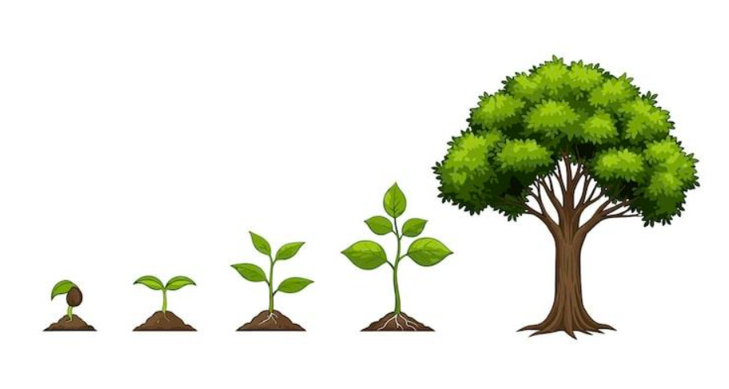
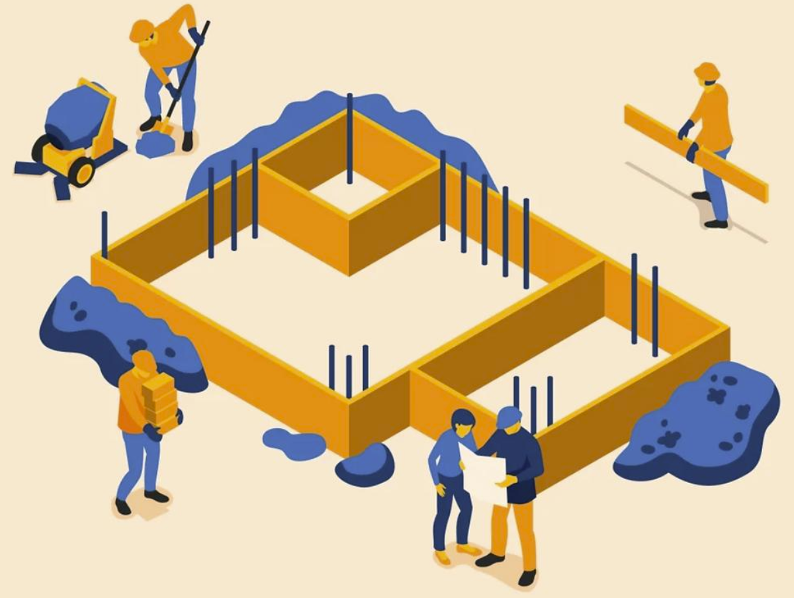
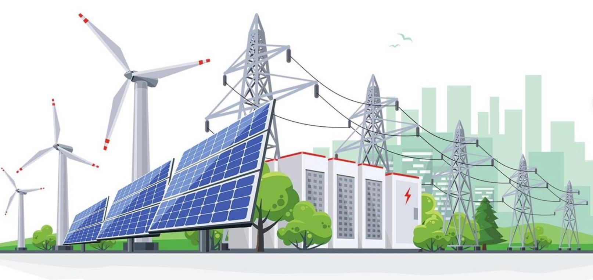
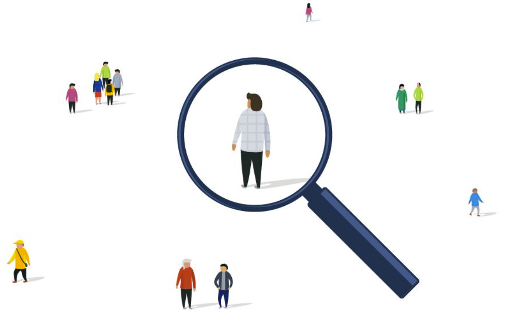

IELTS 7.0 多义词训练课 · 第一讲
本讲学习内容
Lesson 01
20 个核心学术动词
核心语义 · 词义延伸 · 高频搭配 · 阅读例句 · 翻译训练
20
核心多义词
5
重点语义训练
第一组：从“形成、建立、发展”理解单词
1. DEVELOP

核心画面：逐渐形成、成长、展开
它的本质是：一个事物从原来的状态逐渐发展，形成新的状态。
| 常见表达 | 真正的意思 |
|---|---|
| develop a skill | 培养技能 |
| develop a habit | 养成习惯 |
| develop an interest | 培养兴趣 |
| develop a relationship | 发展关系 |
| develop a theory | 建立、完善理论 |
| develop a disease | 患上疾病 |
| develop a problem | 出现问题 |
| develop a country | 发展国家 |
| develop a product | 开发产品 |
| develop the ability to do sth | 培养做某事的能力 |
雅思阅读例句：
Children develop language skills through interaction with others.
儿童通过与他人的互动逐渐发展语言能力。
Some individuals may develop health problems as a result of stress.
一些人可能因压力而逐渐出现健康问题。
翻译直觉：
看到 develop，不要急着翻译成“发展”，先问自己：什么东西正在逐渐形成？
2. ESTABLISH

核心画面：把原本没有的东西正式建立起来
它和 develop 有什么区别？
- establish：强调建立、确立这个动作或结果。
- develop：强调逐渐成长、形成、完善的过程。
| 常见表达 | 翻译 |
|---|---|
| establish a company | 创立公司 |
| establish a relationship | 建立关系 |
| establish a system | 建立制度 |
| establish a connection | 建立联系 |
| establish a reputation | 树立声誉 |
| establish a fact | 证实事实 |
| establish a link between A and B | 确立A和B之间的联系 |
| establish an institution | 建立机构 |
例句：
Researchers have established a link between sleep quality and academic performance.
研究人员已经证实睡眠质量与学业表现之间存在联系。
这里的 establish 不是建立一栋建筑，而是通过证据确立某种联系。
3. GENERATE

核心画面：从某种来源产生出新的东西
| 常见表达 | 翻译 |
|---|---|
| generate income | 产生收入 |
| generate electricity | 发电 |
| generate employment | 创造就业 |
| generate interest | 引起兴趣 |
| generate discussion | 引发讨论 |
| generate ideas | 产生想法 |
| generate energy | 产生能量 |
| generate pressure | 产生压力 |
例句：
Renewable energy can generate electricity without producing large amounts of carbon emissions.
可再生能源能够在不产生大量碳排放的情况下发电。
The proposal generated considerable public interest.
这项提议引起了公众的广泛兴趣。
注意它与 create 的区别：
- create：创造、创作，强调创造出某物。
- generate：产生、引发，常强调某种结果由某个来源产生。
4. ESTABLISH vs DEVELOP vs GENERATE
这三个词经常被混淆。
| 中文 | 更自然的英文 |
|---|---|
| 建立一个制度 | establish a system |
| 发展一种技能 | develop a skill |
| 产生新的想法 | generate new ideas |
| 建立研究联系 | establish a research link |
| 逐渐形成兴趣 | develop an interest |
| 引发公众讨论 | generate public discussion |
记忆口诀：
- Establish：把东西立起来。
- Develop：让东西长起来。
- Generate：让东西产生出来。
5. IDENTIFY

核心画面：从很多信息中认出、找出、确定某个东西
| 常见表达 | 翻译 |
|---|---|
| identify a problem | 发现、识别问题 |
| identify the cause | 找出原因 |
| identify the factors | 确定因素 |
| identify the risks | 识别风险 |
| identify a person | 认出某人 |
| identify a need | 发现需求 |
| identify the differences | 找出区别 |
| be identified as | 被认定为 |
例句：
Researchers identified several factors that contribute to childhood obesity.
研究人员确定了几个导致儿童肥胖的因素。
The main cause of the problem has not yet been identified.
这个问题的主要原因尚未被确定。
这里要有一个直觉：不是随便发现，而是从复杂信息中辨认并确定。
第二组：从“处理、参与、影响”理解单词
6. ADDRESS
核心画面：把某件事放到面前，正面处理它
| 表达 | 翻译 |
|---|---|
| address an issue | 处理问题 |
| address a concern | 回应担忧 |
| address the needs | 满足需求 |
| address inequality | 应对不平等 |
| address an audience | 向听众讲话 |
| postal address | 邮寄地址 |
例句：
Governments need to address the growing problem of unemployment.
政府需要应对日益严重的失业问题。
7. APPROACH
核心画面：靠近某个目标，或采取某种接近它的方式
| 表达 | 翻译 |
|---|---|
| approach a problem | 处理问题 |
| approach a topic | 探讨话题 |
| a new approach | 新方法 |
| approach a deadline | 临近截止日期 |
| approach someone | 接近某人 |
| a practical approach | 实际可行的方法 |
例句：
Different countries adopt different approaches to environmental protection.
不同国家采取不同的环境保护方法。
特别注意：approach 作名词时，常见结构是 an approach to sth。
8. INVOLVE
核心画面：把某人或某物卷入某个过程之中
| 表达 | 翻译 |
|---|---|
| involve students in learning | 让学生参与学习 |
| be involved in research | 参与研究 |
| involve several factors | 涉及多个因素 |
| involve considerable effort | 需要付出大量努力 |
| involve risks | 涉及风险 |
| a process involving several stages | 涉及多个阶段的过程 |
例句：
The study involved more than 1,000 participants.
这项研究涉及一千多名参与者。
The process involves collecting and analysing data.
这一过程包括收集和分析数据。
注意：involve 不一定都是“参与”，有时是“涉及”“需要”。
9. CONDUCT
核心画面：有组织、有目的地开展某项行动
| 表达 | 翻译 |
|---|---|
| conduct research | 开展研究 |
| conduct an experiment | 进行实验 |
| conduct a survey | 开展调查 |
| conduct an interview | 进行访谈 |
| conduct business | 经营业务 |
| personal conduct | 个人行为 |
例句：
A survey was conducted to examine people’s attitudes towards public transport.
研究人员开展了一项调查，以考察人们对公共交通的态度。
注意 conduct 的名词和动词读音不同，阅读中要能识别两种词性。
10. MAINTAIN
核心画面：让原有的状态继续保持
| 表达 | 翻译 |
|---|---|
| maintain a balance | 保持平衡 |
| maintain stability | 维持稳定 |
| maintain a relationship | 维持关系 |
| maintain a healthy lifestyle | 保持健康生活方式 |
| maintain equipment | 维护设备 |
| maintain that… | 坚称、坚持认为 |
例句：
Some researchers maintain that environmental protection should be a priority.
一些研究人员坚持认为，环境保护应该成为优先事项。
这里是非常典型的多义词：从“保持一种状态”延伸到“坚持一个观点”。
第三组：从“解释、归因、范围”理解单词
11. ACCOUNT
核心画面：对一件事作出说明、计算或交代
这个词特别值得学，因为它在雅思阅读中有几个看起来完全不同的意思，但背后有共同逻辑。
| 表达 | 翻译 |
|---|---|
| account for 30% | 占30% |
| account for the decline | 解释下降的原因 |
| account for the difference | 解释差异 |
| take sth into account | 将某事考虑进去 |
| on account of | 因为 |
| give an account of | 描述、叙述 |
例句：
Online sales account for a growing proportion of total retail sales.
线上销售占零售总额的比例越来越大。
Several factors may account for the decline in birth rates.
有几个因素可能解释出生率下降的原因。
最重要的两个意思：
- account for + 数字：占据多少比例。
- account for + 现象：解释某个现象。
12. SUBJECT
核心画面：某个人或事物处于某种条件、影响或约束之下
| 表达 | 翻译 |
|---|---|
| be subject to change | 可能发生变化 |
| be subject to pressure | 承受压力 |
| be subject to regulations | 受到法规约束 |
| be subjected to criticism | 遭受批评 |
| subject someone to pressure | 使某人承受压力 |
| a subject of research | 研究主题 |
| academic subjects | 学科 |
例句：
The results are subject to considerable uncertainty.
这些结果存在相当大的不确定性。
Employees may be subjected to intense pressure in the workplace.
员工在工作场所可能承受巨大的压力。
特别注意：
- be subject to：受到某种条件或限制。
- be subjected to：被施加某种待遇或经历。
13. ISSUE
核心画面：某件事情被提出、出现，进入公共关注范围
| 表达 | 翻译 |
|---|---|
| a social issue | 社会问题 |
| a controversial issue | 有争议的问题 |
| a key issue | 关键问题 |
| issue a statement | 发布声明 |
| issue a warning | 发出警告 |
| issue a report | 发布报告 |
| address an issue | 处理问题 |
例句：
The government issued a report highlighting the importance of environmental protection.
政府发布了一份报告，强调环境保护的重要性。
The issue of climate change has attracted worldwide attention.
气候变化问题已经引起全世界的关注。
你需要记住：issue 不只是“问题”，还可以作动词，表示发布、发出。
14. RAISE
核心画面：向上抬高，或者把某件事情提出来
这是雅思写作特别高频的词。
| 表达 | 翻译 |
|---|---|
| raise awareness | 提高意识 |
| raise a question | 提出问题 |
| raise concerns | 引起担忧 |
| raise funds | 筹集资金 |
| raise children | 抚养孩子 |
| raise prices | 提高价格 |
| raise standards | 提高标准 |
| raise an objection | 提出反对意见 |
例句：
Schools should raise students’ awareness of environmental issues.
学校应该提高学生对环境问题的意识。
The rapid development of artificial intelligence has raised concerns about employment.
人工智能的快速发展引发了人们对就业问题的担忧。
这里你可以建立一个直觉：
原本不明显的东西，被 raise 之后，变得更高、更突出，或者进入人们的注意范围。
15. REFLECT
核心画面：镜子把东西反射出来，引申为体现、反映
| 表达 | 翻译 |
|---|---|
| reflect light | 反射光线 |
| reflect reality | 反映现实 |
| reflect changes | 反映变化 |
| reflect public opinion | 反映公众意见 |
| reflect differences | 体现差异 |
| reflect on the past | 反思过去 |
例句：
The results reflect a significant change in people’s attitudes towards education.
这些结果反映了人们对教育态度的显著变化。
Students should reflect on their learning experiences.
学生应该反思自己的学习经历。
这两个意思不要混淆：
- reflect something：反映、体现某事。
- reflect on something：思考、反思某事。
第四组：从“归因、支持、维持”理解单词
16. ATTRIBUTE
核心画面：给一个结果指定来源或原因
| 表达 | 翻译 |
|---|---|
| attribute A to B | 将A归因于B |
| be attributed to | 被归因于 |
| attribute success to hard work | 将成功归功于努力 |
| attribute importance to sth | 认为某事很重要 |
例句：
The improvement in public health can be attributed to advances in medical technology.
公共健康水平的改善可以归因于医疗技术的进步。
The researchers attributed the decline in productivity to a lack of sleep.
研究人员将生产力下降归因于睡眠不足。
记忆方向：
[ \text{Result A} \longleftarrow \text{Cause B} ]
attribute A to B = A 的原因被认为是 B。
17. SUPPORT
核心画面：从下面托住某个东西，使它不倒下、不失去力量
这个词的延伸很丰富：
| 表达 | 翻译 |
|---|---|
| support an argument | 支持一个论点 |
| support a theory | 支持一种理论 |
| provide financial support | 提供经济支持 |
| support economic growth | 支持经济增长 |
| support a family | 养家 |
| support a claim | 为某个主张提供支持 |
| evidence supports the theory | 证据支持这一理论 |
| support a proposal | 支持一项提议 |
例句：
There is insufficient evidence to support this claim.
没有足够的证据支持这一主张。
Parents should provide emotional support for their children.
父母应该给予孩子情感支持。
注意：support 不仅是“支持某个人”，还可以是“证据支持某种观点”。
18. CONCERN
核心画面：某件事情与某人有关，因此引起他的关注或担忧
这个词既可以是名词，也可以是动词。
| 表达 | 翻译 |
|---|---|
| environmental concerns | 环境方面的担忧 |
| a major concern | 主要担忧 |
| public concern | 公众关注 |
| concern about safety | 对安全的担忧 |
| be concerned about | 对……感到担忧 |
| be concerned with | 涉及、关于 |
| concern someone | 与某人有关、使某人担忧 |
| as far as … is concerned | 就……而言 |
例句：
Air pollution is a major concern in many developing countries.
空气污染是许多发展中国家面临的一个主要问题。
The report is primarily concerned with the impact of technology on education.
这份报告主要关注技术对教育的影响。
一个非常重要的区别：
- be concerned about：担心某事。
- be concerned with：涉及某事、关注某个主题。
19. SUSTAIN
核心画面：持续支撑某种状态，使它能够维持下去
这个词是雅思 7 分很值得掌握的学术词汇。
| 表达 | 翻译 |
|---|---|
| sustain economic growth | 保持经济增长 |
| sustain development | 维持发展 |
| sustain an argument | 支持一个论点 |
| sustain damage | 遭受损害 |
| sustain attention | 保持注意力 |
| sustainable development | 可持续发展 |
| sustain a high level of performance | 保持高水平表现 |
例句：
It is difficult for developing countries to sustain rapid economic growth.
对于发展中国家而言，维持快速经济增长是困难的。
Human activities have caused damage that ecosystems cannot sustain.
人类活动造成了生态系统无法承受的损害。
注意 sustainable：
- sustainable development：可持续发展。
- sustainable energy：可持续能源。
- sustainable lifestyle：可持续生活方式。
20. RANGE
核心画面：从一个范围的一端延伸到另一端
| 表达 | 翻译 |
|---|---|
| a wide range of options | 广泛的选择 |
| a range of products | 一系列产品 |
| range from A to B | 从A到B不等 |
| price range | 价格范围 |
| age range | 年龄范围 |
| a wide range of abilities | 各种不同的能力 |
| mountain range | 山脉 |
例句：
The university offers a wide range of courses.
这所大学提供各种各样的课程。
The ages of the participants ranged from 18 to 65.
参与者的年龄从18岁到65岁不等。
注意：
a range of 强调一系列不同的事物，而 range from A to B 强调变化的区间。